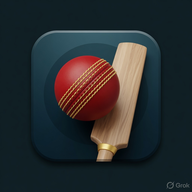

AN INSAN CREATIONS GAME

Original 3D cricket career at Riverbend Stadium. Create a cricketer, play town-to-international, toss, timing, catching, fielding, celebrations, and trophy lift. Not affiliated with Cricket 26, EA, IPL, BCCI, or ICC. Landscape on phones.
Android: web companion ZIP (Chrome → Add to Home screen) or APK (WebView of the live game, sideload, not Play Store). iPhone: open in Safari → Add to Home Screen. No native iOS app. Play in browser